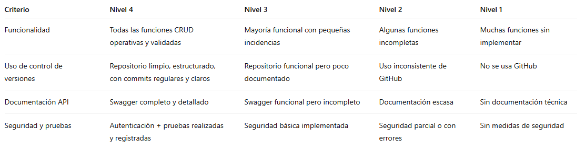

Todos los instrumentos estarán disponibles desde el inicio en el REA para que el alumnado pueda consultarlos en cualquier momento. Estarán enlazados desde la plataforma Teams del aula y también se presentarán al inicio de la tarea correspondiente.
Lista de Cotejo: Diseño técnico
Usada en las Tareas 1 y 2 para verificar:
- Claridad y detalle del análisis de requisitos.
- Coherencia en el modelo de datos.
- Relación entre entidades bien justificada.
- Aplicación del patrón MVC.
Rúbrica de desarrollo y validación del backend
Evaluación de Tareas 3 y 4: implementación del sistema:

Rúbrica de presentación final
Utilizada en Tarea 5 para evaluar:
- Claridad y estructura de la exposición (oral y visual).
- Fluidez en la demostración funcional del proyecto.
- Argumentación sobre decisiones técnicas tomadas.
- Capacidad de respuesta ante preguntas del docente/grupo.
Notas para el alumnado
Toda la evaluación será transparente: los criterios y rúbricas se explicarán antes de cada entrega.
Se valorará la mejora progresiva, el trabajo colaborativo y la capacidad de resolver problemas.
La calificación final tendrá en cuenta:
- 60% Proyecto técnico (código, base de datos, documentación)
- 20% Participación y trabajo en equipo
- 20% Presentación final y calidad de los entregables